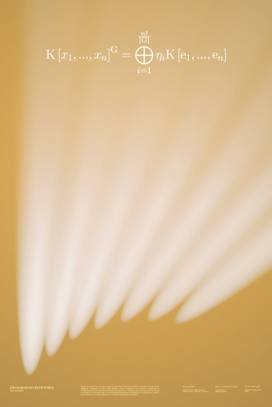
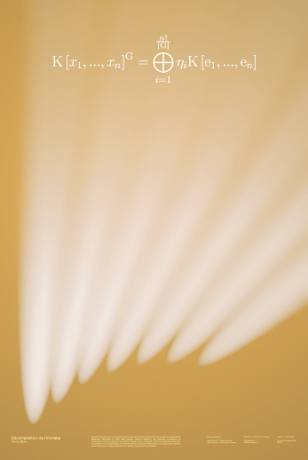
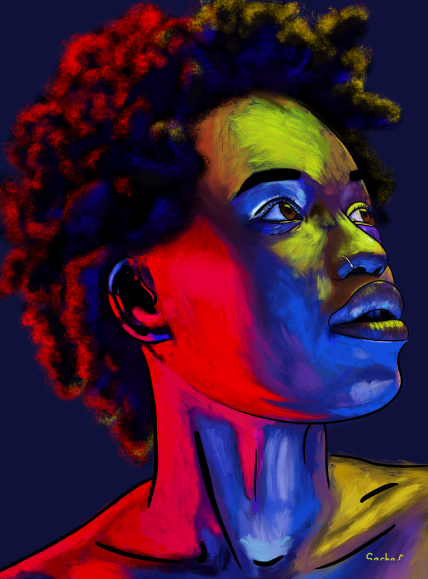
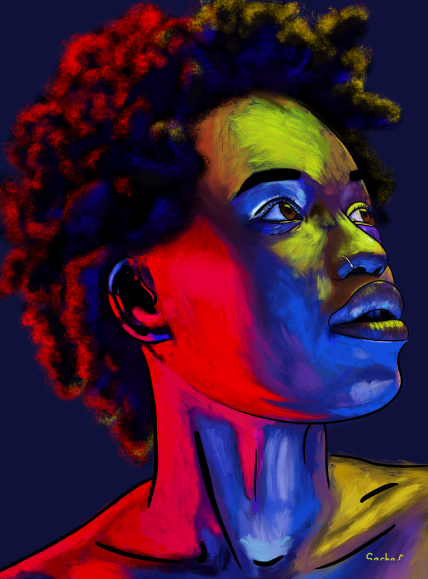

Bloom
Concept Art
Animation
World Building
This project is still ongoing and involves the development of a platformer-type video game. We
are a
team of 5 students, in which I occupy the role of concept artist and 2D animator. I also
contributed
to the elaboration of the story and the "lore" of our universe. This step is of great importance
as
it allows us to maintain coherence in our production even today.
The game takes place in a context of a declining world for which the player's character carries
a
message of hope. The tower, which grows to pierce the clouds, is held up by an energy root that
embraces it. It is from this symbiosis that the antagonist of our hero derives its power.
 

Équations en image
3D Modeling
This project establishes itself at the border between art and science. Following interviews with 8 computer science researchers from the Gustave Eiffel University, our project team and our tutors reflected on how to generate interest from any audience towards complex mathematical concepts. The goal was not to strictly understand the equations of the researchers, but rather to stimulate curiosity while promoting the art-science link in the transmission of knowledge, academic culture, and research.
 


Colorful Portraits
Digital painting
These portraits are my way of expressing my love for colors. I genuinely indulge in working with numerous shades. I’ve chosen to draw portraits to improve my skills at this exercice first, but ended up enjoying wielding colors to my liking more. This is only one of the many styles I have elaborated even though I am always keen on discovering new ones.